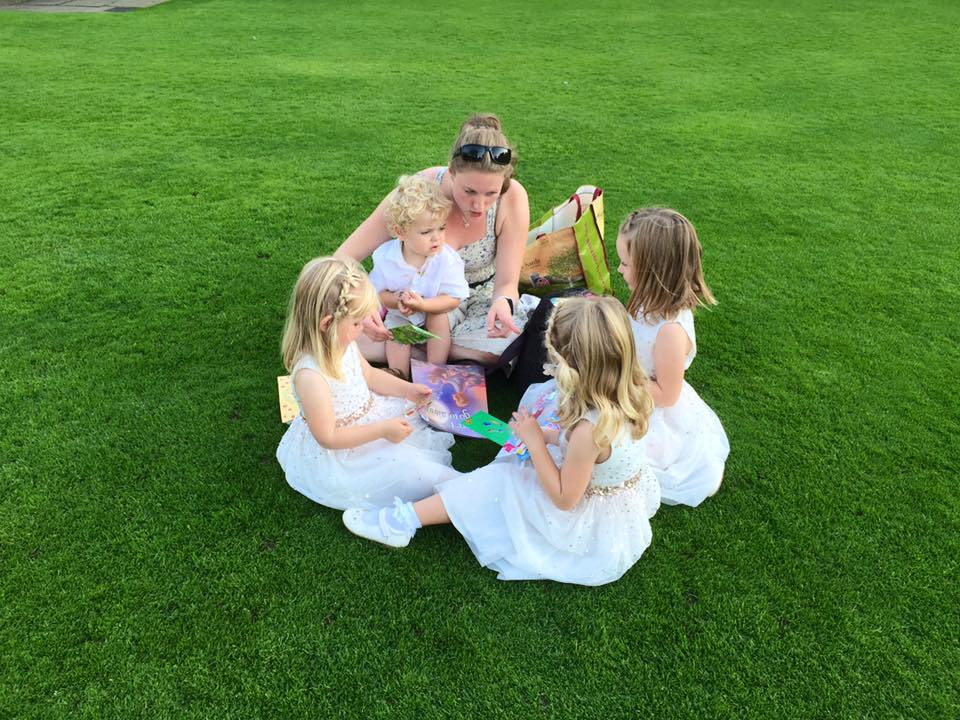
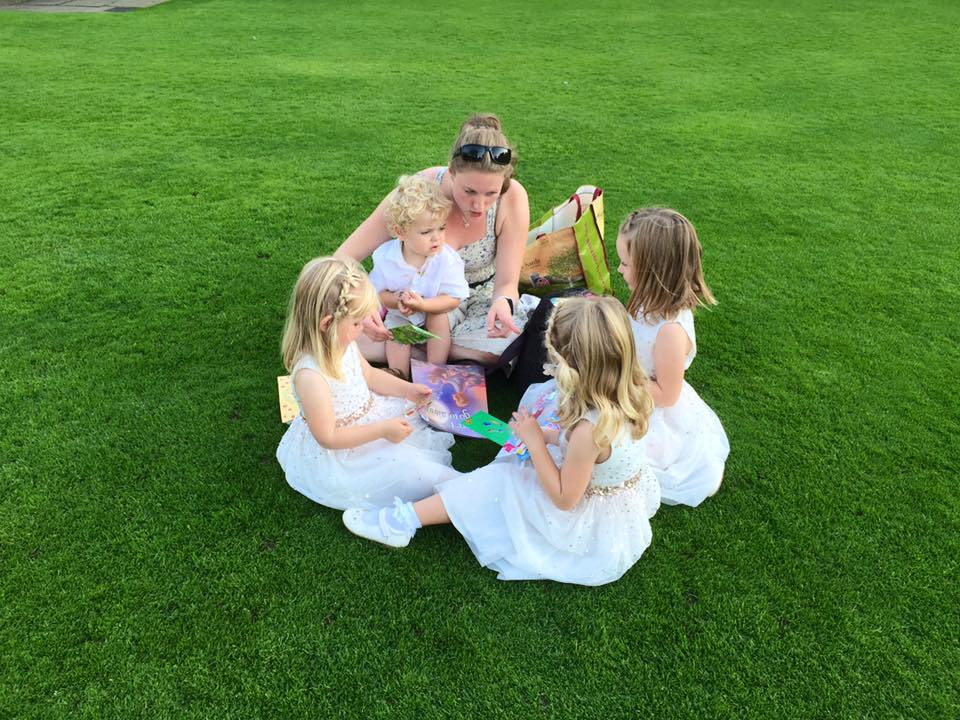

OUR EVENT CHILDCARE HAS ALWAYS BEEN FOCUSED ON PROVIDING THE BEST POSSIBLE CARE
FOR EACH INDIVIDUAL CHILD, AND IN THESE DIFFICULT TIMES, OUR PRIORITY REMAINS
ENSURING THAT EVERY CHILD IS COMFORTABLE IN OUR CARE, AND EVERY PARENT
CONFIDENT IN OUR PROVISION.
“We used Alex from Mummy SOS for our wedding to look after our
15 month old son. He was born during COVID and not used to other
people caring for him or putting him to sleep. During our initial phone
call she was professional and took her time to understand our worries
and requirements. On her pre event visit she was very well prepared and put
us and our son instantly at ease. On the night she collected him at 6.30 pm,
took him back to our hotel, cared for him overnight and brought a very happy
and smiling baby back to us at 9am. We could not have been better pleased
and would definitely recommend Mummy SOS! We thought that the cost was very
reasonable for the excellent service provided. Thanks to Mummy SOS my husband
and I knew that our son was well looked after, letting us relax and fully enjoy
the evening as husband and wife - not mum and dad!”
- Alice and Scott, London
IF YOU HAVE THE WORD CHILD AND EVENT IN THE SAME SENTENCE, YOU NEED
Mummy SOS®
Children's Events and Event Childcare
But what makes us unique? Nanny Alex!
Our Managing Director doesn't just sit behind a desk... she crawls under it
and turns it into a den! Over her 7 years of working with children and families,
the creator, owner and manager of Mummy SOS®, has become best known by her charges
as Nanny Alex, their favourite playmate! And this is because she is actually
an experienced and highly qualified childcare practitioner who personally oversees
every event!
In addition to a Bachelor of Arts (Honours) in Business Management and Working with
Children, Alexandra has undertaken a diverse range of vocational courses in childcare.
Nanny Alex has developed Mummy SOS® to provide the uniquely flexible childcare services
parents desire.
INTERESTED IN OUR SERVICES?